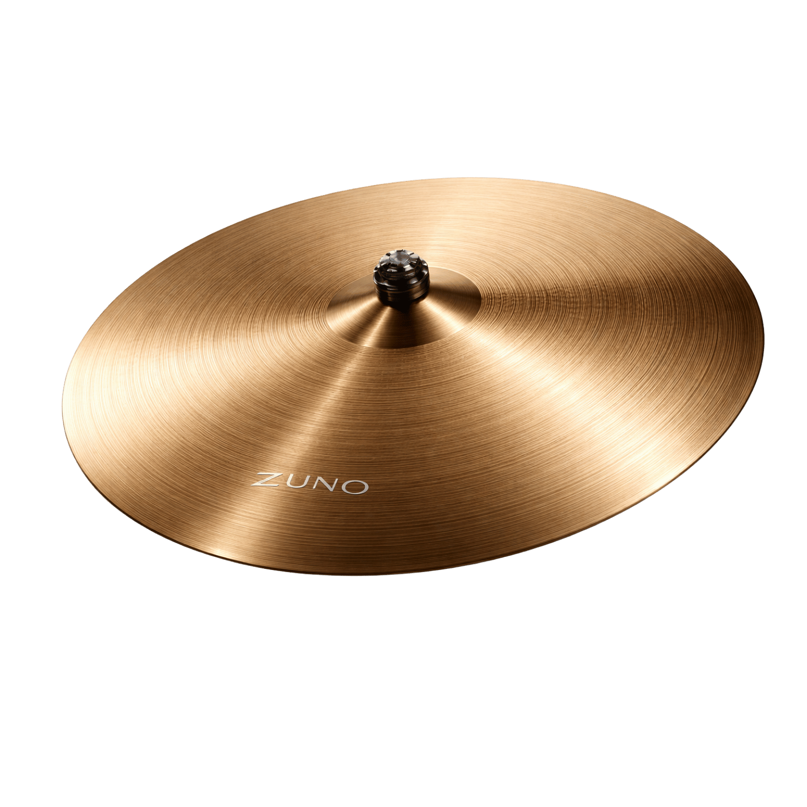
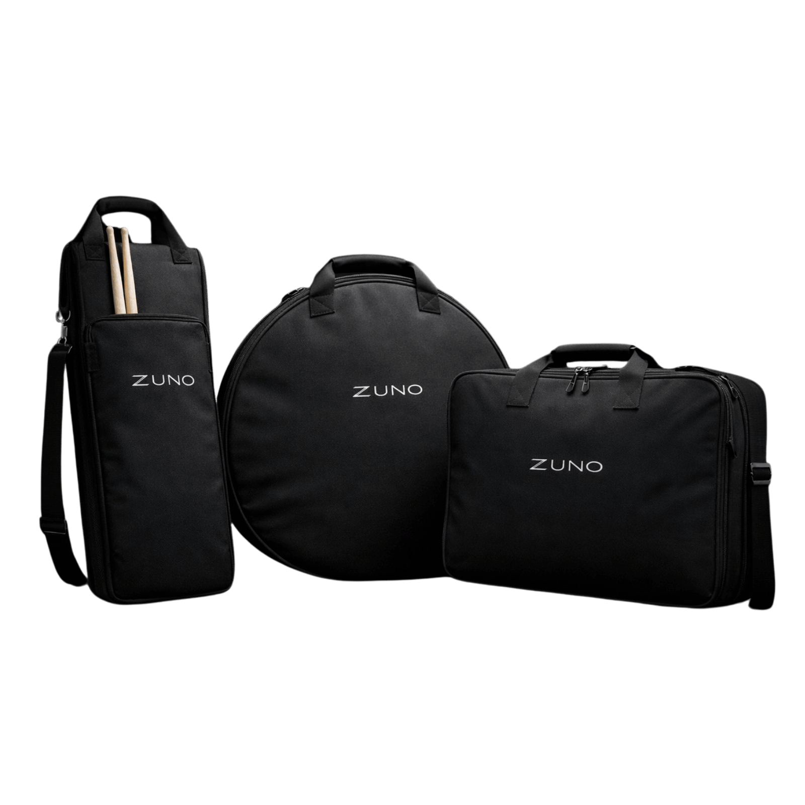
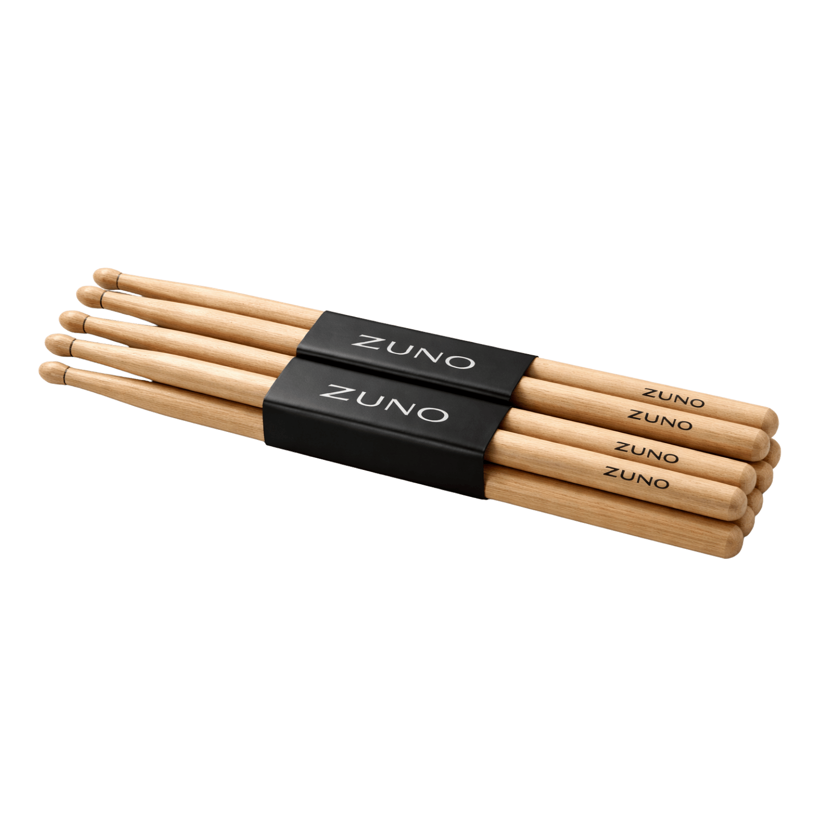
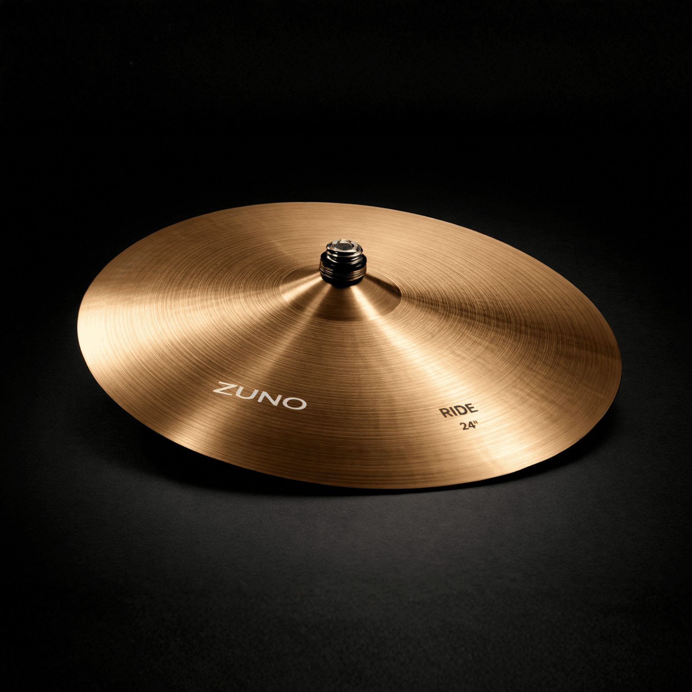

Feito para durar. Projetado para soar.
Nossos Produtos



Por que Zuno?
Qualidade Absurda
Cada peça passa por controle rigoroso antes de sair da linha. Nenhum detalhe é ignorado.
Precisão de Fábrica
Tolerâncias mínimas, acabamento máximo. Feito pra encaixar e soar como deveria.
Durabilidade
Materiais selecionados para aguentar o uso intenso sem perder resposta ou definição.
Sem Concessões
Não existe versão "boa o suficiente" aqui. Ou é Zuno, ou não é.

Ride ZUNO 24”
Definição clara, resposta precisa e controle absoluto em cada batida. Projetados para músicos que não aceitam limitações, os pratos ZUNO entregam consistência, projeção e presença em qualquer dinâmica.
Ver DetalhesO que os músicos dizem
Marcos
"A definição é absurda. Cada batida responde exatamente como eu toco, sem perder controle."
Bia
"O equilíbrio é perfeito. Consigo extrair dinâmica sem esforço, do mais leve ao mais intenso."
Fernando
"Durabilidade e consistência que dá confiança. Não preciso me adaptar ao prato, ele responde a mim."
Eleve o nivel do seu som
Controle, definição e resposta precisa em qualquer dinâmica.
Explorar Produtos